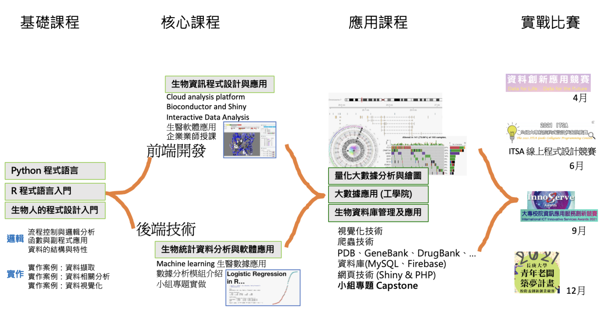

大數據分析積木微學程 (Big-data analysis micro-Course)
一、宗旨： 學生可藉由本學程提供的核心必修課程與選修課程習得大數據分析的專業能力、專業軟體操作技巧與與大數據分析能力。目標學生類型為工學院、醫學院、管理學院的大學部學生與研究生，提供以大數據分析為主的跨領域軟體應用與程式教育訓練。
二、依據： 依「長庚大學學程設置原則」辦理。
https://academic.cgu.edu.tw/p/412-1009-4382.php?Lang=zh-tw
三、目的： 培育跨領域軟體應用人才，加強程式教育素養。學程規劃配合通識課程與專業領域程式相關課程，對課程作統一規劃，提供本校各學系研究生及大學部學生修讀，為AI+X 課程奠定程式能力基礎。
四、申請修讀資格： 本校全體學生(含：大學部與研究生)皆可選修。
五、修習學分： 本學程之課程組合分為三類課群 (基礎課程、核心課程、與應用課程)，申請人須修習至少八學分本學程課程，包含三類課群至少各一門課程。
六、學程召集人： 工學院資工系- 李季青老師 (分機：3887, chichinglee@cgu.edu.tw )
七、學程申請流程： 微學程不得在畢業當學期提出申請，畢業當學期仍可修習課程。若修習之課程不在微學程課程表內，可填寫[大數據分析積木學程課程認定表格] 經微學程辦公室評估與微學程宗旨相符，即可提出申請並以附加檔案方式上傳微學程申請系統。

申請辦法:
申請系統操作步驟:
申請系統操作手冊取得微學程認證證書:
1. 110畢業生請參考 110學年度大學部畢業生辦理離校手續及領取學位證書事宜2. 審核流程(第3頁:申請學程證明審核)
3. 填寫 學程證明申請書
4. 把申請表交給工學院院 林皓儀秘書 電話:03-2118800#5751 E-MAIL:haoyi@mail.cgu.edu.tw
Q/A:
1. 申請後如果想放棄會影響畢業嗎?教務處會認定是否有符合微學程課目，若畢業時未修滿微學程學分，則不會發給微學程證明；不會影響畢業。
2. 我修的課程有使用程式，但是不在微學程認列清單內，也可以申請嗎?
可填寫[大數據分析積木學程課程認定表格]，由微學程辦公室認定。
3. 修習微學程對未來的幫助是甚麼?
微學程把跨領域的課程統整理來，有系統的修習跨域程式課程，符合微學程課程的同學，學校會發給證明，將來升學/求職時能佐證有修習過大數據分析相關課程。
4. 我想申請110年的微學程，但是Capstone課程我還沒有開始修，是否需要先修完才能申請?
可以先提出申請。
5. 研究所也可以申請嗎?
全校同學皆可申請，包含大學部與研究所。
6. 我現在大四上學期，還有課程未修完，能否申請?
微學程不得在畢業當學期提出申請，畢業當學期仍可修習課程。可先提出申請，於大四下學期把學程認定的課程修完即可。
7. 我申請了微學程，當時是填寫專題研究課程當Capstone課程，因故退選該課程，能否換一門Capstone課程?
可以的，請重新填寫 大數據分析積木學程Capstone課程認定表格